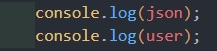
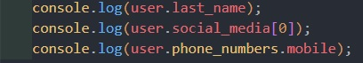
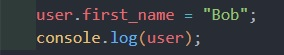
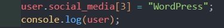
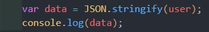

Usually JSON data will come from an external source, such as a database, or an API (Application Programming Interface), such as Google Maps or from Twitter. In this file, we are simply including the JSON directly.
Converting the JSON string into an Object:
Then let's see what each of these variables have in them.
You can see that the console.log showed the JSON string and the user object, respectively. Now that you have an object, you can easily acces values:
You can change the values in the object:
You can delete values in the object:
You can add values to the object:
Once you have made all the changes to the user object, you can convert it back to a JSON string, if you want to send it out to some other service, or maybe a database.
